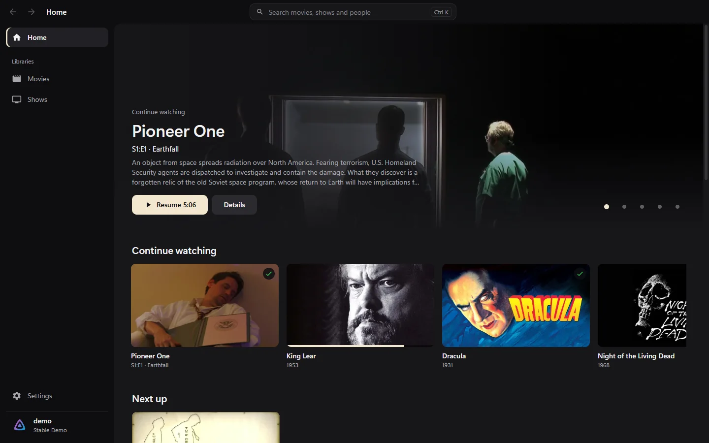
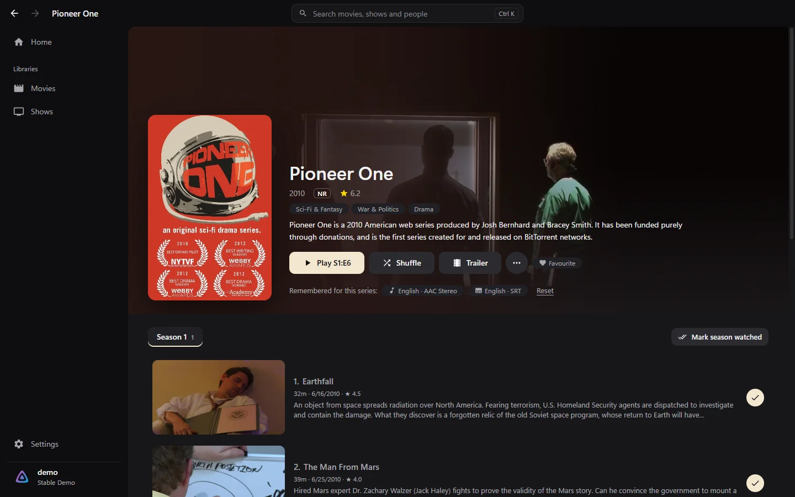
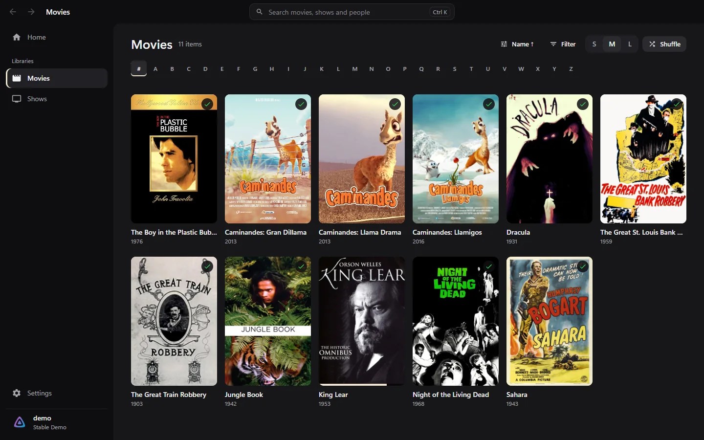
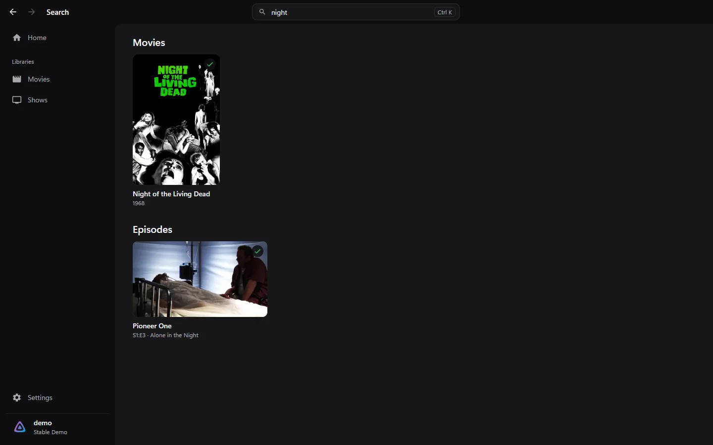

The Jellyfin player
that just works.
Nova is a fast, calm desktop app for your Jellyfin server. It doesn't freeze when you press Play, it remembers how you sort every library, and it keeps your audio and subtitle choices for the whole series.

Fixes for the things that annoy you
The most common complaints about Jellyfin Media Player, each one fixed.
No more freezing on Play
The player opens instantly. Every request runs in the background with a timeout, and you can always back out. If your PC can't play a file directly, Nova switches to server transcoding on its own.
Sorting that sticks
Each library remembers its own sort, filter, genre and card size, even after a restart. Back and Forward keep your place, and big libraries get an A–Z jump bar.
Tracks remembered per series
Pick Japanese audio and English subtitles once, and every episode follows. Nova matches tracks by what they are, not their position, so it still works when episodes order them differently.



Everything else you'd expect
Plus a few things you've probably wished Jellyfin had.
- Play, pause and skip from the Windows taskbar, with progress on the icon
- A Continue watching jump list on the taskbar
- Servers on your network found for you; switch user or server any time
- New badges for shows with new episodes, and a New episodes row
- Subtitles ready the instant an episode starts
- Skip intro and recap, or skip automatically
- Up Next when the credits start, and Still watching? after a few episodes
- Sleep timer: pause later, or stop after this episode
- Styled ASS/SSA subtitles with their own fonts, signs and karaoke
- Dual subtitles: a second language at the top of the picture
- Subtitle font, size, colour, edge, background and position
- Subtitle sync with Z and X, remembered per series
- Trickplay previews and chapter marks on the seek bar
- Night mode and volume boost up to 300%
- Video fit: fit, fill, stretch or zoom
- Always-on-top mini player
- Your Windows accent colour, reduced motion and app zoom
- Every screen works with the keyboard alone
- Your sign-in stays in Nova's core, never in a link
- No telemetry: Nova talks only to your server and GitHub
- Updates itself, with an opt-in beta channel
Keyboard shortcuts
Press ? in Nova to see them all.
Get Nova Player
Free, open source, and it updates itself.
Windows may show "Windows protected your PC" the first time. Click More info → Run anyway (Nova isn't code-signed yet).